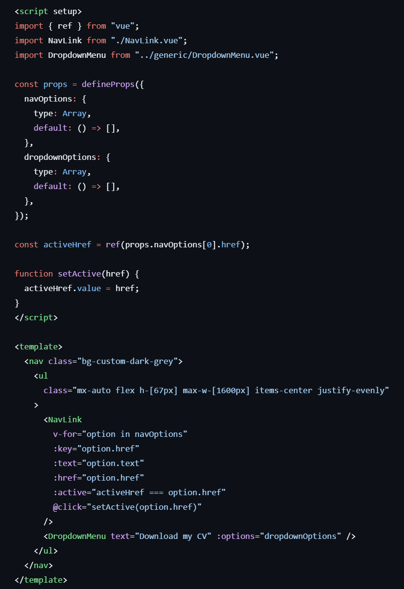

A full rebuild of my portfolio front page using Vue.js and Tailwind CSS, to showcase my skills. I focused on creating modular components, making use of dynamic data and state as much as possible.
This project utilises modular components built with Vue.js and styled with Tailwind CSS, allowing for maximum reusability.
Components make use of dynamic data, props and looping to render content efficiently.
Reusable styles have been set up as @applys in Tailwind CSS, allowing for consistent styling and easy modification across components.